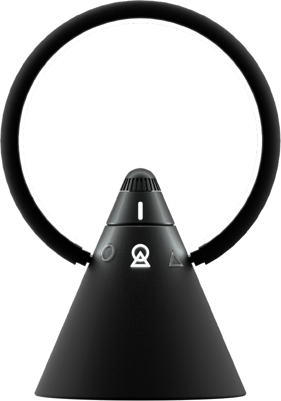
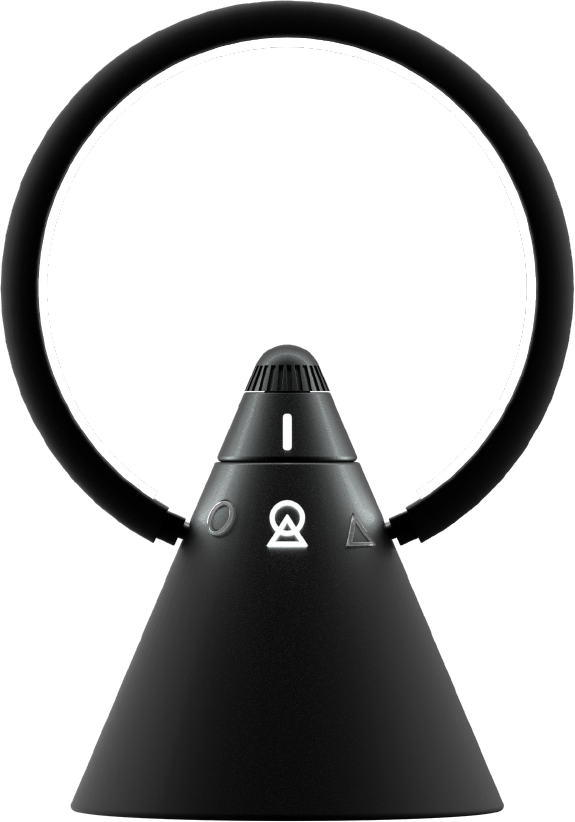

A sun rising from behind the mountain to welcome a new day, takes shape
in a portable, dimmable and rechargeable LED lamp.
A luminous circle intersects a cone with a glowing base allowing
creative use of light in space.
Turn the dimmable switch (360°) to increase the brightness of the light
source.
Turn the switch to select 1 of the 3 light sources between stripled,
spotlight or both.
Un sole sorge da dietro la montagna per accogliere un nuovo giorno, un
giorno migliore, prende forma in una lampada a LED portatile,
dimmerabile e ricaricabile.
Un cerchio luminoso interseca un cono dalla base lampante dando la
possibilità di un uso creativo della luce nello spazio.
Ruotando l'interruttore dimmerabile (360°) si aumenta la luminosità
della sorgente luminosa.
Ruotando l'interruttore al centro si seleziona 1 delle 3 sorgenti
luminose tra stripled, torcia o entrambe.

 
